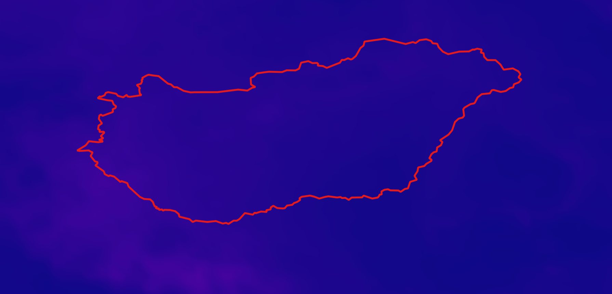
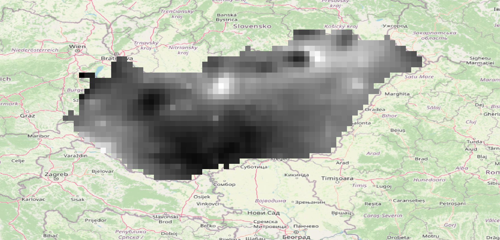
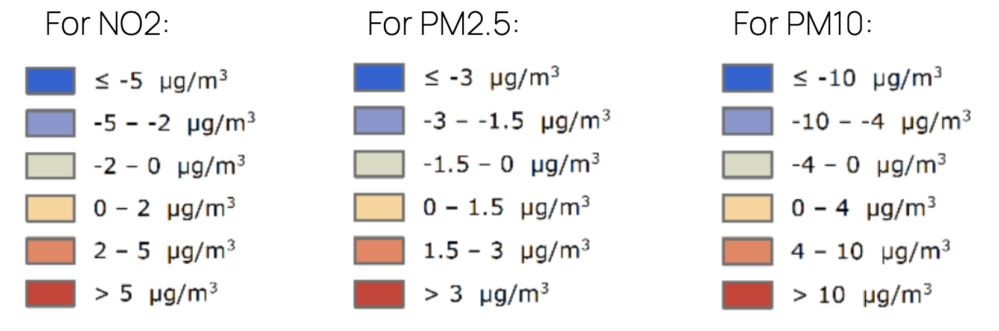
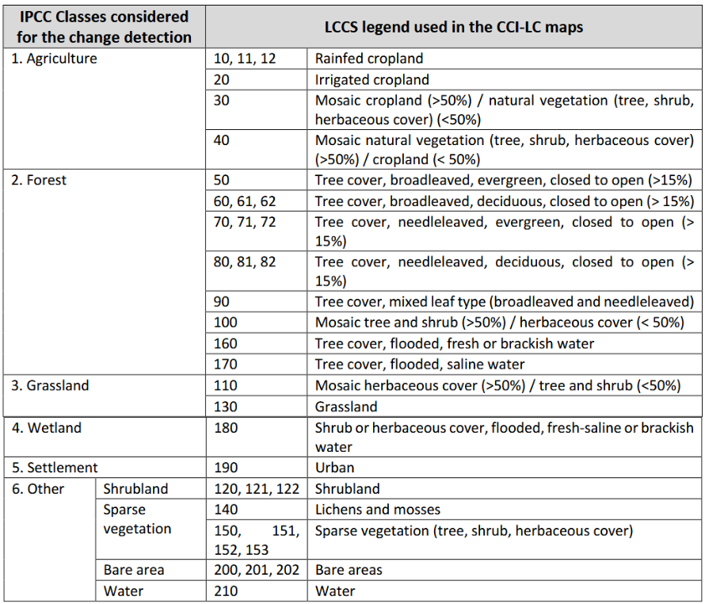

Our approach
Integrating Copernicus reanalysis datasets for comprehensive air quality insights
AirAware builds upon the open data infrastructure provided by the Copernicus Atmosphere Monitoring Service (CAMS) , particularly leveraging the Copernicus Atmosphere Monitoring Service (CAMS) Reanalysis datasets. These datasets integrate satellite observations, ground-based sensor measurements, and advanced atmospheric modeling to deliver consistent, long-term records of key air pollutants such as PM2.5, PM10 and NO2 across Europe. The project focuses on the period 2013-2022, extracting annual mean pollutant concentrations for Hungary by aggregating monthly data and complementing it with up-to-date land cover information from the European Space Agency. This allows us to isolate pollutant levels specifically over urban and built-up areas, critical for assessing population exposure.
Understanding these trends is essential because air pollution remains one of the most pressing environmental and public health challenges, contributing to respiratory diseases, ecosystem degradation, and reduced quality of life. By combining pollutant data with population distribution maps, AirAware supports evidence-based decisions and raises awareness among communities and policymakers.
Database and Data Sources
A harmonized multi-source foundation for long-term air quality and exposure analysis
The AirAware project uses multiple open-source datasets to build a robust and comprehensive database for air quality analysis. The primary air pollution data are obtained from the Copernicus Atmosphere Monitoring Service (CAMS) Reanalysis. This dataset provides monthly aggregated pollutant maps from 2013 up to November 2022. December 2022 data are processed separately to complete the annual coverage.
Land cover data are collected for each year in the study period from the Copernicus Land Monitoring Service. This annual time series of land cover maps enables the project to analyze the evolution of land use and its relationship with pollution trends over time. The data are clipped and aligned with the study area to allow detailed spatial correlation between pollution and different land cover classes, with particular attention to built-up and urban zones.
Population data for the study are derived from the WorldPop project, which provides high-resolution population estimates at a 100-meter scale. For the years 2013 to 2020, we use the unconstrained estimation model dataset, while for 2021 and 2022 we rely on the newer R2024B dataset, also unconstrained and at 100-meter resolution. Although these datasets differ slightly in their modelling approaches, we consider this difference acceptable for our analysis because our methodology focuses on population exposure quantiles rather than absolute values. This approach mitigates potential inconsistencies across years, ensuring robust comparisons over time. By integrating this population data with air quality and land cover layers, the project enables an insightful assessment of pollution exposure patterns within different demographic contexts.
All datasets undergo preprocessing to harmonize spatial resolution, temporal scales, and data quality, enabling consistent and accurate analyses and visualizations on the platform.
QGIS data processing
From raw data to spatial insight: processing air quality, land cover, and population datasets
CAMS NetCDF Monthly and Yearly Aggregated Pollutants
To obtain air pollution concentrations, we use monthly aggregated data from the CAMS European air quality reanalyses. After downloading the NetCDF and GeoTIFF formats, the rasters are loaded into QGIS, reprojected to EPSG:4326, and clipped to the study area using an automated batch workflow. December 2022 is processed separately to complete the annual series. The monthly layers are then aggregated into annual means using the r.series tool in QGIS.

Original CAMS mesh layer from NetCDF file

Processed monthly aggregated layer
Yearly Concentration Map
The yearly average pollutant rasters are reclassified into five categories based on EU air quality thresholds. This step is automated using QGIS’s Reclassify by table tool to generate standardized and comparable concentration maps for each pollutant. These classified outputs are used in both visual analysis and in statistical summaries across regions and time.

EU classification levels based on annual average concentrations
Annual Average Difference from 5-year Mean
To assess recent deviations from historical pollution trends, we compute the difference between 2022 annual values and the average of the previous five years (2017-2021). This is achieved using the Raster Calculator in QGIS, and the resulting maps highlight areas with increased or reduced pollution levels compared to recent norms. The resulting maps are categorized into defined pollution levels and styled using clear, intuitive colors, making it easier to interpret spatial patterns at a glance.

Classification of annual differences from the 5-year mean
ESA CCI Land Cover Reclassification, Resampling, and Pollution Statistics
Land cover data from ESA CCI are processed annually from 2013 to 2022. The lccs_class layers are reprojected and reclassified into broader IPCC categories: Agriculture, Forest, Grassland, Wetland, Settlement and Others. For class 6, we also include code 220 (Permanent Snow and Ice). This simplification improves readability and allows thematic comparisons. We resample the CAMS rasters to match the 300 m resolution of the land cover maps, enabling consistent overlay and integrated analysis. To explore pollution trends in different environments, we compute zonal statistics using the reclassified land cover. Urban and built-up areas are extracted, vectorized, and used to summarize pollutant values over time, producing a time series of average and maximum concentrations by class. This supports interpretation of land use-pollution interactions and urban exposure dynamics.

IPCC land cover categories
Air Quality and Population Exposure
Population data are harmonized and categorized into quantile-based classes. We then integrate these layers with pollutant concentration maps to calculate bivariate indicators at the administrative unit level. Each zone is characterized by both its population density class and pollutant class, allowing for the creation of bivariate maps that reveal where high pollution and population coincide. To visualize population exposure, we dissolve zones by pollutant class and calculate total population per class, producing pie charts and comparative summaries ready for web integration.

Bivariate classification
Website Implementation
Visualizing data for transparency and insight
The AirAware website is developed to provide interactive and intuitive access to the processed air quality data. The platform is built using HTML, CSS, and JavaScript, with data visualizations implemented primarily in D3.js for high customizability and performance. The main interface features stacked bar charts and pie charts to explore pollutant concentration trends, land cover dynamics, and population exposure patterns. Interactive legends, tooltips, and synchronized highlights across charts help users interpret the data effectively. The interactive maps on the platform are developed using modern web mapping technologies that enable dynamic visualization of spatial data. These tools support features such as zooming, panning, and layering, allowing users to explore pollutant distributions and land cover classifications seamlessly. The mapping interface is integrated with the data backend to provide real-time interaction and responsive updates.
The website follows a modular design architecture that facilitates easy integration of new datasets and indicators over time. All heavy data processing, including spatial analysis and raster computations, is performed offline with QGIS and Python, while the frontend handles only the visualization of preprocessed results, minimizing client-side computation and maximizing performance. This implementation strategy guarantees clarity, accessibility, and transparency, aligning with AirAware’s mission to foster informed public engagement and scientific communication around air quality.